AquaSphere
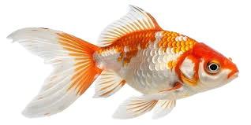

This sea creature is a **moray eel**, a fascinating and powerful predator commonly found in tropical and subtropical oceans. Moray eels usually live hidden among coral reefs and rocky crevices, where they wait patiently to ambush prey. Their long, snake-like bodies and strong jaws filled with sharp teeth help them catch fish, crustaceans, and octopus. Although their open mouth may look aggressive, moray eels often keep it open to help them breathe by passing water over their gills. They play an important role in maintaining the balance of reef ecosystems by controlling prey populations, making them a vital part of marine life.
This beautiful yellow fish is a popular attraction in aquariums because of its bright color and calm, graceful movement. It thrives in well-maintained aquarium environments that closely resemble natural coral reefs, with clean water, proper lighting, and plenty of rocks for shelter. In aquariums, this fish helps maintain a healthy ecosystem by feeding on algae and keeping surfaces clean. Its peaceful nature makes it suitable for community tanks, allowing visitors to observe marine life in a balanced and educational setting. Displaying such fish in aquariums not only enhances visual beauty but also helps raise awareness about marine conservation and the importance of protecting coral reef habitats.


This striking sea creature is an **octopus**, a highly intelligent and fascinating animal commonly displayed in public aquariums. Octopuses are known for their eight powerful arms lined with suction cups, which they use to move, explore, and capture prey such as crabs, shrimp, and small fish. In aquarium environments, octopuses require carefully controlled conditions, including clean, well-oxygenated water, rocky hiding spaces, and low lighting to mimic their natural ocean habitats. They are masters of camouflage and can change their color and texture to blend into their surroundings, making them especially interesting for visitors to observe. Aquariums play an important role in educating the public about octopus behavior, intelligence, and the need to protect marine ecosystems where these remarkable creatures live.
Turtles are gentle reptiles that live in water and on land. In aquariums, they swim gracefully and enjoy basking under warm lights. They need clean water and a safe habitat to stay healthy. A balanced diet of vegetables, insects, and pellets keeps them strong. Visitors can watch their slow, curious movements up close. Aquariums teach people about turtles’ unique behaviors. They also show why protecting turtles in the wild is important. Seeing turtles in aquariums helps us appreciate these amazing creatures . A balanced diet of vegetables, insects, and pellets keeps them strong. Visitors can watch their slow, curious movements up close. Aquariums teach people about turtles’ unique behaviors. They also show why protecting turtles in the wild is important. Seeing turtles in aquariums helps us appreciate these amazing creatures

GALLERY SECTION
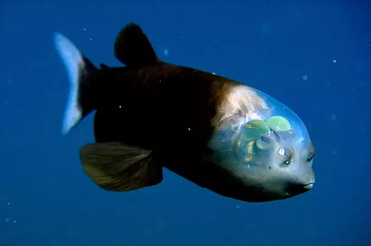
BARRELEYE
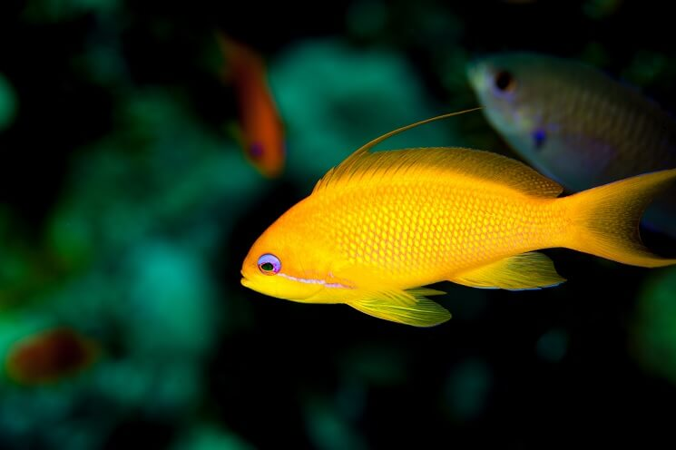
YELLOW ANTHIAS

BLACK TIP REEF
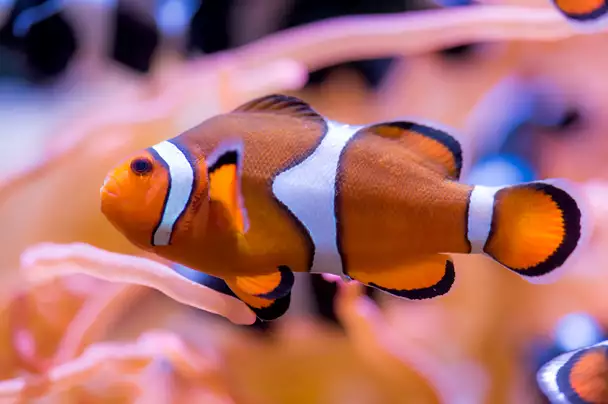
CLOWN FISH
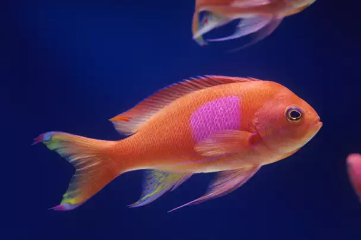
SQUARESPOT
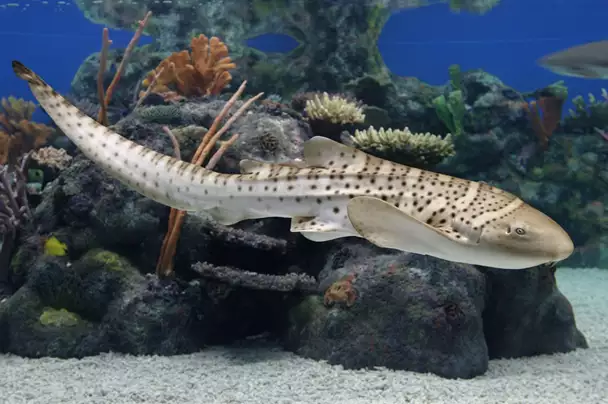
ZEBRA SHARK
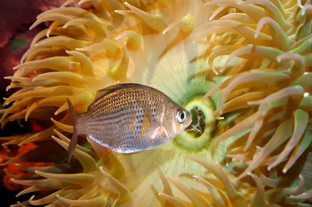
SHINER FISH
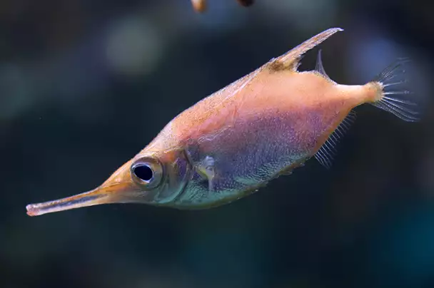
SNIPE FISH
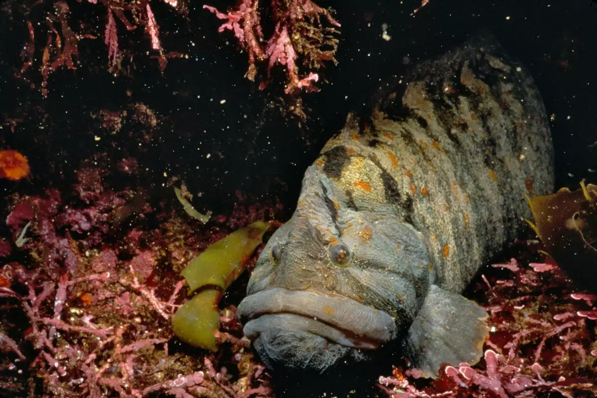
MONKEY FACE FISH
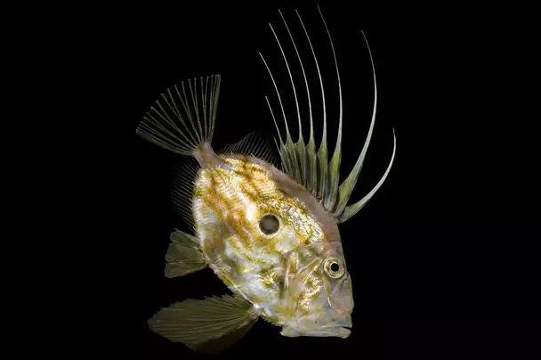
JOHN DORY
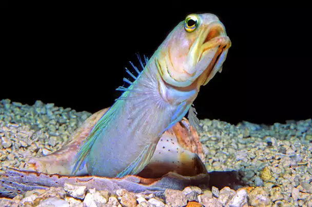
HEADED JAWFISH
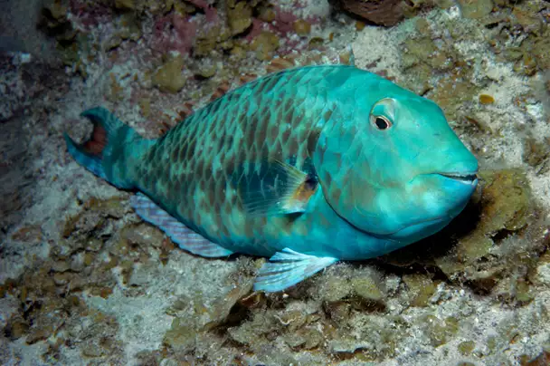